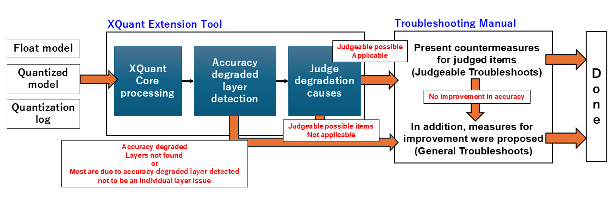
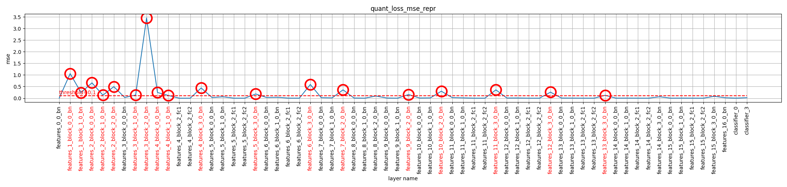

XQuant Extension Tool¶
About XQuant Extension Tool¶
This tool calculates the quantization error for each layer by comparing outputs between the float and quantized models using the quantization log. And, it identifies the causes of the detected errors and recommends appropriate improvement measures for each cause. Finally, the results are presented in reports.
The following are the main components of this tool.
This tool detects degraded layers (layers with large quantization errors) and identifies the causes of degradation within those layers.
This document describes countermeasures for accuracy degradation based on causes identified by the XQuant Extension Tool.
Overall Process Flow¶

The overall process follows the steps below:
Input the float model, quantized model, and quantization log.
Detect layers that have large difference between float and quantized models.
Judge degradation causes on the detected layers.
[Judgeable Troubleshoots] Based on the judge results, individual countermeasure procedures are suggested from the troubleshooting manual.
[General Troubleshoots] When accuracy does not improve after steps 1-4, general improvement measures are suggested from the troubleshooting manual.
Please refer to the Troubleshooting Manual for the Judgeable Troubleshoots and General Troubleshoots in detail.
How to Run¶
This XQuant Extension Tool was created based on XQuant, as shown in the link below. In addition to the conventional XQuant functions, it judges degradation causes and links to the Troubleshooting Manual that provides appropriate countermeasures for each cause of degradation. It can suggest more specific countermeasures than conventional tools and provides manuals that are easy to understand even for users who are not familiar with quantization.
Please replace xquant_report_pytorch_experimental in the XQuant tutorial with xquant_report_troubleshoot_pytorch_experimental.
from model_compression_toolkit.xquant import xquant_report_troubleshoot_pytorch_experimental
# xquant_report_pytorch_experimental --> xquant_report_troubleshoot_pytorch_experimental
result = xquant_report_troubleshoot_pytorch_experimental(
float_model,
quantized_model,
random_data_gen,
validation_dataset,
xquant_config
)
To be more specific, execute the following steps:
Set log folder by mct.set_log_folder
Do PTQ by mct.ptq.pytorch_post_training_quantization
Define XQuantConfig
Execute XQuant Extension Tool by xquant_report_troubleshoot_pytorch_experimental
mct.set_log_folder('./log/dir/path')
quantized_model, quantized_info = mct.ptq.pytorch_post_training_quantization(
in_module=float_model, representative_data_gen=random_data_gen)
xquant_config = XQuantConfig(report_dir='./log_tensorboard_xquant')
from model_compression_toolkit.xquant import xquant_report_troubleshoot_pytorch_experimental
result = xquant_report_troubleshoot_pytorch_experimental(
float_model,
quantized_model,
random_data_gen,
validation_dataset,
xquant_config
)
Note
If log of mct.set_log_folder does not exist, the Unbalanced Concatenation described below will not be executed.
XQuantConfig Format and Examples¶
When running XQuant Extension Tool, set the following parameters.
For other parameters, see API Document.
input parameter |
type |
details |
initial value |
|---|---|---|---|
report_dir |
str |
Directory where the results will be saved. [Necessary] |
|
quantize_reported_dir |
str |
Directory where the the quantization log will be saved. If not specified, the path set with mct.set_log_folder will be used. |
Most recently set value in mct.set_log_folder |
threshold_quantize_error |
dict[str, float] |
Threshold values for detecting degradation in accuracy. |
{“mse”:0.1, “cs”:0.1, “sqnr”:0.1} |
threshold_degrade_layer_ratio |
float |
If the number of layers detected as degraded is large, skips the judge degradation causes specify the ratio here. |
0.5 |
threshold_zscore_outlier_removal |
float |
Used in judgment degradation causes (Outlier Removal). Threshold for z_score to detect outliers. |
5.0 |
threshold_ratio_unbalanced_concatenation |
float |
Used in judgment degradation causes (unbalanced “concatenation”). Threshold for the multiplier of range width between concatenated layers. |
16.0 |
threshold_bitwidth_mixed_precision _with_model_output_loss_objective |
int |
Used in judgment degradation causes (Mixed precision with model output loss objective). Bitwidth of the final layer to judge insufficient bitwidth. |
2 |
Understanding the Quantization Error Graph¶
Six quantization error graphs are generated: three metrics (MSE, cosine similarity, SQNR) × two datasets (representative, validation). Quantization error represents the differences of layer outputs between float and quantized models. These graphs are saved in the directory specified by the XQuantConfig’s report_dir.
Comparing each quantization error with threshold_quantize_error to identify layers with significant behavior changes after quantization.
As an example, an output graph calculated using “mse” with a representative dataset is shown. The initial threshold value of 0.1 is set, and layers exceeding this threshold are indicated with a red circle. In addition, the corresponding layer names on the X axis are highlighted in red. With this graph, layers with accuracy degradation can be visually confirmed.

X-axis: Layer names (layers identified as degraded are highlighted in red)
Y-axis: Quantization error
Red dashed line: Threshold for accuracy degradation as set in XQuantConfig
Red circle: Layers judged to have degraded accuracy
Understanding the Judgeable Troubleshoots¶
The following items are automatically identified by the XQuant Extension Tool. When this tool detects these issues, corresponding WARNING messages are displayed in your console. Please refer to the respective Troubleshooting Manuals and change the configuration as needed.
WARNING:Model Compression Toolkit:There are output values that deviate significantly from the average. Refer to the following images and the TroubleShooting Documentation (MCT XQuant Extension Tool) of 'Outlier Removal'.
WARNING:Model Compression Toolkit:There are activations that contain negative values. Refer to the troubleshooting manual of "Shift Negative Activation".
WARNING:Model Compression Toolkit:There are unbalanced range layers concatnated. Refer to the troubleshooting manual of 'Unbalanced "concatenation"'.
WARNING:Model Compression Toolkit:the quantization bitwidth of the last layer is an extremely small number. Refer to the troubleshooting manual of 'Mixed Precision with model output loss objective'.
Understanding the General Troubleshoots¶
If no specific degradation causes are identified in the above judgment, or if accuracy does not improve after applying the proposed countermeasures, general improvement measures are suggested.
Please refer to the 2. General Troubleshoots of Troubleshooting Manuals for details.